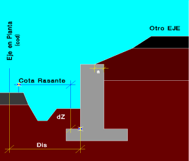
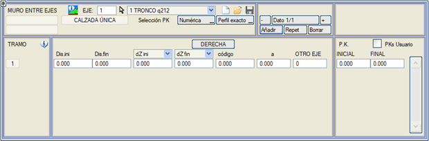
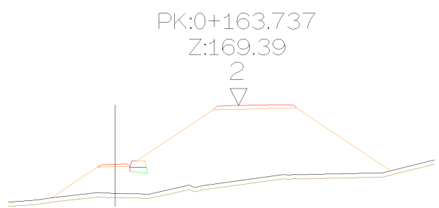

| |
|
EKSENLER ARASI DUVAR
|
Bu seçenek aracılığıyla kullanıcı, birbirine yakın ve yaklaşık olarak paralel iki eksen arasına bir istinat duvarı tanımlayabilir. Tipik bir durum, yükselen bir çıkış rampası veya farklı eksenlere ait iki taşıt yolunun birbirine çok yakın olduğu bir kesimdir. Bu iletişim kutusunda, mevcut eksen olarak kabul edilen daha alçak kotlu eksene göre duvarın konumunu belirleyen parametreler tanımlanır. Kullanıcı, bu duvarın eksenin sağında mı yoksa solunda mı olacağını belirtir ve duvarın geometrisi, HESAP BÖLGELERİ tablosuna göre ilgili tip kesitin yarma iksa duvarı tanımında belirtilen geometriye karşılık gelir. PROJE menüsünden hesaplama yapılırken ilgili eksenler için [BAĞ] kutucuğu aktif ise, program her iki ekseni de otomatik olarak kırpar. Yine de, kullanıcı murEE#.lfr (# eksen numarasıdır) dosyasında oluşturulan sınır çizgisini düzenleyebilir. Tanımlanan duvarın genişliği olmasa bile ikincil eksen kırpılır. Ana eksenin hendeği, ilgili yarma kesitinde tanımlanan bağlantı noktasını kullanır. Kullanıcı KM'leri seçeneği, KM değerlerinin kullanıcı formatında girilmesine olanak tanır. Bu seçenek etkinleştirilebilir/devre dışı bırakılabilir ve aktivasyon durumu .vol dosyasında saklanır. 
Duvarın sırtında negatif bir şev olduğunda veya diğer eksen duvarın üzerine sırt kenarından pozitif bir "a" mesafesinde oturduğunda, metrajlarda mükerrerliği önlemek için diğer eksenin geometrisi (terasman hatları, seçilmiş zeminler ve zemin iyileştirmeleri) yeniden oluşturulur. 
|